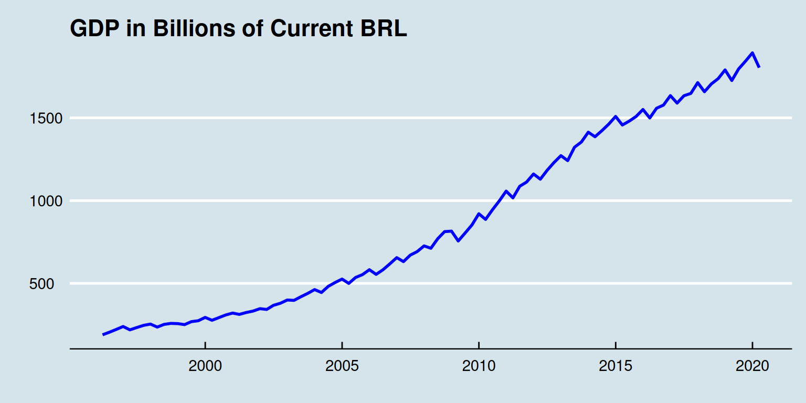
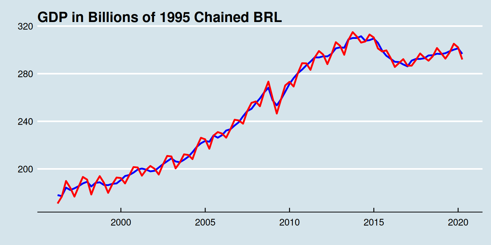
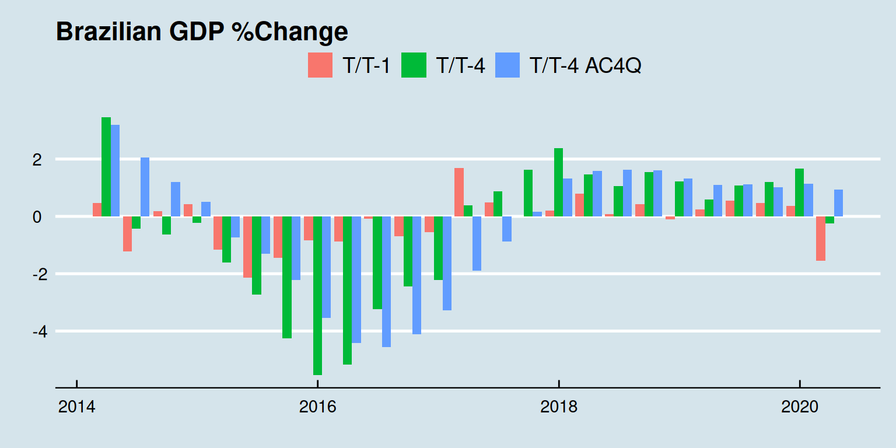

Scraping Brazilian GDP data from the SIDRA-IBGE website
https://www.jfcostasantos.com/post/2015-07-23-r-rmarkdown/
https://cran.r-project.org/web/packages/sidrar/index.html
Source code for the functions can be found here.
In this post, we will scrape the brazilian gdp data from the SIDRA-IBGE website. First, let’s load up our functions.
library(dplyr)
library(reshape2)
library(lubridate)
library(xts)
library(dygraphs)
library(ggplot2)
library(ggthemes)
ls()
character(0)
source("../../R/funs-macro.R")The gdp.dl() function, downloads the data from the website and saves a .csv. The gdp.transform() loads the .csv file, transforms the data, renames the dates, makes a data.frame with the data, adds more transformed data, and finally saves the data.frame as a .rds file.
# download gdp
gdp.dl()
# transform gdp
gdp.transform()After using the gdp.dl() and gdp.transform() functions, all we have to do is load the data and make our tables and graphs.
# load gdp.df
gdp.df <- gdp.load.df()
# load gdp.xts
gdp.xts <- gdp.load.xts()
# show gdp.df
paged_table(gdp.df)Firs, let’s make a table with the annual gdp data.
tmp <- filter(gdp.df, dates > "2014-01-01" & month(dates) == "12" )
mat <- cbind( "Billions of current BRL"=tmp$sum4.nomi/1000, "Billions of 1995 BRL"=tmp$sum4.real/1000, "AC 4Q T/T-4"=tmp$ret.ac4q.real)
rownames(mat) <- substring( rownames(tmp), 1, 4)
kable( t( apply( mat, 2, rev) ), digits=2, caption = "GDP by Year")| 2019 | 2018 | 2017 | 2016 | 2015 | 2014 | |
|---|---|---|---|---|---|---|
| Billions of current BRL | 7256.93 | 6889.18 | 6583.32 | 6269.33 | 5995.79 | 5778.95 |
| Billions of 1995 BRL | 1197.66 | 1184.20 | 1168.80 | 1153.54 | 1192.61 | 1236.45 |
| AC 4Q T/T-4 | 1.14 | 1.32 | 1.32 | -3.28 | -3.55 | 0.50 |
Our last year’s GDP was 7.26 Trillions of BRL.
Now, let’s make a table with this year’s and the last years’s quarterly gdp data.
tmp <- filter(gdp.df, dates > "2019-01-01" )
mat <- cbind( "Billions of current BRL"=tmp$nominal/1000, "T/T-1"=tmp$ret1, "T/T-4"=tmp$ret4, "AC 4Q T/T-4"=tmp$ret.ac4q.real)
rownames(mat) <- rownames(tmp)
kable( t( apply( mat, 2, rev) ), digits=2, caption = "GDP by Quarter")| 2020:Q1 | 2019:Q4 | 2019:Q3 | 2019:Q2 | 2019:Q1 | |
|---|---|---|---|---|---|
| Billions of current BRL | 1803.42 | 1892.74 | 1842.70 | 1795.81 | 1725.68 |
| T/T-1 | -1.54 | 0.37 | 0.46 | 0.54 | 0.25 |
| T/T-4 | -0.25 | 1.67 | 1.20 | 1.08 | 0.59 |
| AC 4Q T/T-4 | 0.93 | 1.14 | 1.02 | 1.11 | 1.10 |
Graph of GDP in current BRL, I don’t know why, but we can make it.
ggplot(gdp.df) +
geom_line( aes( x = dates, y = nominal/1000 ), color = "blue", size=1 ) +
theme( plot.title = element_text(hjust = 0.5, face = "bold" ) ) +
ggtitle( "GDP in Billions of Current BRL" ) +
xlab("") + ylab("") +
theme_economist()
Graph of GDP in chained 1995 BRL, seasonally adjusted and not seasonally adjusted.
ggplot(gdp.df) +
geom_line( aes( x = dates, y = real.SA/1000 ), color = "blue", size=1 ) +
geom_line( aes( x = dates, y = real.NSA/1000 ), color = "red", size=1 ) +
theme( plot.title = element_text(hjust = 0.5, face = "bold" ) ) +
ggtitle( "GDP in Billions of 1995 Chained BRL" ) +
xlab("") + ylab("") +
theme_economist()
Graph of GDP percent change.
tmp <- gdp.df %>%
filter(dates > "2014-01-01") %>%
select(dates, ret1, ret4, ret.ac4q.real)
tmp
dates ret1 ret4 ret.ac4q.real
2014:Q1 2014-03-31 0.4765253866 3.4677555 3.1866360
2014:Q2 2014-06-30 -1.2303549887 -0.4366015 2.0623091
2014:Q3 2014-09-30 0.1917797886 -0.6387205 1.1919919
2014:Q4 2014-12-31 0.4237205825 -0.2257329 0.5039557
2015:Q1 2015-03-31 -1.1626184075 -1.6129606 -0.7253226
2015:Q2 2015-06-30 -2.1427874480 -2.7349576 -1.2951279
2015:Q3 2015-09-30 -1.4466916414 -4.2632892 -2.2128855
2015:Q4 2015-12-31 -0.8401840581 -5.5307582 -3.5457634
2016:Q1 2016-03-31 -0.8787139579 -5.1637509 -4.4219226
2016:Q2 2016-06-30 -0.0770932820 -3.2402680 -4.5568852
2016:Q3 2016-09-30 -0.6957238510 -2.4523686 -4.1117256
2016:Q4 2016-12-31 -0.5558770498 -2.2144327 -3.2759169
2017:Q1 2017-03-31 1.6952557533 0.3895951 -1.9033432
2017:Q2 2017-06-30 0.4786722382 0.8794170 -0.8724909
2017:Q3 2017-09-30 0.0001006893 1.6347336 0.1670224
2017:Q4 2017-12-31 0.1996840736 2.3816693 1.3228690
2018:Q1 2018-03-31 0.7945606637 1.4547130 1.5864831
2018:Q2 2018-06-30 0.0725351035 1.0530038 1.6286588
2018:Q3 2018-09-30 0.4259146133 1.5370855 1.6037266
2018:Q4 2018-12-31 -0.0985953106 1.2228773 1.3172240
2019:Q1 2019-03-31 0.2450047623 0.5936528 1.1041529
2019:Q2 2019-06-30 0.5406235576 1.0759348 1.1097632
2019:Q3 2019-09-30 0.4617916873 1.1958098 1.0242484
2019:Q4 2019-12-31 0.3654610773 1.6681590 1.1365856
2020:Q1 2020-03-31 -1.5394155041 -0.2511932 0.9273143
tmp <- melt(tmp, "dates"); tmp
dates variable value
1 2014-03-31 ret1 0.4765253866
2 2014-06-30 ret1 -1.2303549887
3 2014-09-30 ret1 0.1917797886
4 2014-12-31 ret1 0.4237205825
5 2015-03-31 ret1 -1.1626184075
6 2015-06-30 ret1 -2.1427874480
7 2015-09-30 ret1 -1.4466916414
8 2015-12-31 ret1 -0.8401840581
9 2016-03-31 ret1 -0.8787139579
10 2016-06-30 ret1 -0.0770932820
11 2016-09-30 ret1 -0.6957238510
12 2016-12-31 ret1 -0.5558770498
13 2017-03-31 ret1 1.6952557533
14 2017-06-30 ret1 0.4786722382
15 2017-09-30 ret1 0.0001006893
16 2017-12-31 ret1 0.1996840736
17 2018-03-31 ret1 0.7945606637
18 2018-06-30 ret1 0.0725351035
19 2018-09-30 ret1 0.4259146133
20 2018-12-31 ret1 -0.0985953106
21 2019-03-31 ret1 0.2450047623
22 2019-06-30 ret1 0.5406235576
23 2019-09-30 ret1 0.4617916873
24 2019-12-31 ret1 0.3654610773
25 2020-03-31 ret1 -1.5394155041
26 2014-03-31 ret4 3.4677555330
27 2014-06-30 ret4 -0.4366015438
28 2014-09-30 ret4 -0.6387204704
29 2014-12-31 ret4 -0.2257329128
30 2015-03-31 ret4 -1.6129606319
31 2015-06-30 ret4 -2.7349575581
32 2015-09-30 ret4 -4.2632892331
33 2015-12-31 ret4 -5.5307581567
34 2016-03-31 ret4 -5.1637509190
35 2016-06-30 ret4 -3.2402679518
36 2016-09-30 ret4 -2.4523686228
37 2016-12-31 ret4 -2.2144326935
38 2017-03-31 ret4 0.3895951280
39 2017-06-30 ret4 0.8794169504
40 2017-09-30 ret4 1.6347335704
41 2017-12-31 ret4 2.3816692745
42 2018-03-31 ret4 1.4547130111
43 2018-06-30 ret4 1.0530037859
44 2018-09-30 ret4 1.5370855062
45 2018-12-31 ret4 1.2228773349
46 2019-03-31 ret4 0.5936528370
47 2019-06-30 ret4 1.0759348127
48 2019-09-30 ret4 1.1958098365
49 2019-12-31 ret4 1.6681589767
50 2020-03-31 ret4 -0.2511932122
51 2014-03-31 ret.ac4q.real 3.1866360446
52 2014-06-30 ret.ac4q.real 2.0623091441
53 2014-09-30 ret.ac4q.real 1.1919919305
54 2014-12-31 ret.ac4q.real 0.5039557424
55 2015-03-31 ret.ac4q.real -0.7253226216
56 2015-06-30 ret.ac4q.real -1.2951278913
57 2015-09-30 ret.ac4q.real -2.2128854518
58 2015-12-31 ret.ac4q.real -3.5457633951
59 2016-03-31 ret.ac4q.real -4.4219226434
60 2016-06-30 ret.ac4q.real -4.5568852308
61 2016-09-30 ret.ac4q.real -4.1117255890
62 2016-12-31 ret.ac4q.real -3.2759168983
63 2017-03-31 ret.ac4q.real -1.9033432150
64 2017-06-30 ret.ac4q.real -0.8724908774
65 2017-09-30 ret.ac4q.real 0.1670223695
66 2017-12-31 ret.ac4q.real 1.3228690483
67 2018-03-31 ret.ac4q.real 1.5864831329
68 2018-06-30 ret.ac4q.real 1.6286587721
69 2018-09-30 ret.ac4q.real 1.6037265680
70 2018-12-31 ret.ac4q.real 1.3172239911
71 2019-03-31 ret.ac4q.real 1.1041528677
72 2019-06-30 ret.ac4q.real 1.1097632131
73 2019-09-30 ret.ac4q.real 1.0242484419
74 2019-12-31 ret.ac4q.real 1.1365855804
75 2020-03-31 ret.ac4q.real 0.9273142793
tmp %>%
ggplot( aes( x = dates, y = value, fill = variable) ) +
geom_bar( stat="identity", position="dodge" ) +
scale_fill_discrete(name=" ",
breaks=c("ret1", "ret4", "ret.ac4q.real"),
labels=c("T/T-1", "T/T-4", "T/T-4 AC4Q") ) +
xlab("") + ylab("") +
ggtitle( "Brazilian GDP %Change" ) +
theme( plot.title = element_text(hjust = 0.5, face = "bold" ) ) +
theme_economist()
tmp <- gdp.xts$nominal/1000
dygraph(tmp, main="GDP in Billions of Current BRL") %>%
dyAxis("x", drawGrid = FALSE) %>%
dyEvent("2002-01-1", "Lula", labelLoc = "bottom") %>%
dyEvent("2010-01-1", "Dilma", labelLoc = "bottom") %>%
dyEvent("2016-09-1", "Temer", labelLoc = "bottom") %>%
dyEvent("2019-01-1", "Bolsonaro", labelLoc = "bottom") %>%
dyEvent("2008-10-1", "Subprime", labelLoc = "bottom", color="red") %>%
dyEvent("2020-03-01", "Corona", labelLoc = "bottom", color="red")
tmp <- cbind(gdp.xts$real.SA/1000, gdp.xts$real.NSA/1000)
dygraph(tmp, main="GDP in Billions of 1995 Chained BRL") %>%
dyAxis("x", drawGrid = FALSE) %>%
dyEvent("2002-01-1", "Lula", labelLoc = "bottom") %>%
dyEvent("2010-01-1", "Dilma", labelLoc = "bottom") %>%
dyEvent("2016-09-1", "Temer", labelLoc = "bottom") %>%
dyEvent("2019-01-1", "Bolsonaro", labelLoc = "bottom") %>%
dyEvent("2008-10-1", "Subprime", labelLoc = "bottom", color="red") %>%
dyEvent("2020-03-01", "Corona", labelLoc = "bottom", color="red") %>%
dyLimit( max(tmp), "Peak", labelLoc = "left", color="blue" ) %>%
dySeries("real.NSA", label = "NSA") %>%
dySeries("real.SA", label = "SA")
tmp <- gdp.xts["2014/"]
dygraph(cbind(tmp$ret1, tmp$ret4, tmp$ret.ac4q.real),
main="Brazilian GDP %Change") %>%
dySeries("ret1", label = "T/T-1") %>%
dySeries("ret4", label = "T/T-4") %>%
dySeries("ret.ac4q.real", label = "AC 4Q T/T-4") %>%
dyBarChart() %>%
dyAxis("x", drawGrid = FALSE)If you see mistakes or want to suggest changes, please create an issue on the source repository.